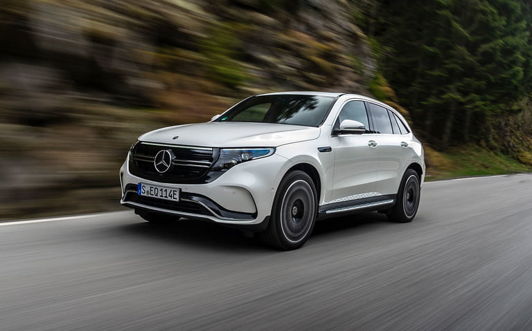

1/5 - Mercedes-Benz EQC

По-рано тази година Mercedes дебютира навлизането си на пазара на EV с изцяло новата гама EQ. EQC е напълно електрически SUV , който работи с 80kWH литиево-йонна батерия, свързана с два електрически мотора, произвеждащи 402 конски сили - повече от достатъчно, за да издържи теглото на 5350-lb луксозния SUV.
Всъщност той ще ускори до 60 само за 5,1 секунди. По платформа и предназначение EQC е базиран на съществуващия модел GLC, но като електрически модел той бележи значителна стъпка за Mercedes в новата ера на автомобилостроенето. Той не само е един от първите в своя сегмент, но също така осигурява предимството да разчита единствено на електрическа енергия за постигане на своята производителност, като същевременно гарантира нивото на комфорт и лукс, намиращо се в автомобилите Mercedes от висок клас, само за около $67 000.